DEMOSAII
THE CHARACTERS
세 세대에 걸쳐 이어지는 이야기입니다. 한 삼부작에서 사라진 사람이 다른 삼부작에서 돌아오고, 먼저 묻힌 것이 나중에 발견됩니다.
GENERATION ONE
불의 삼부작
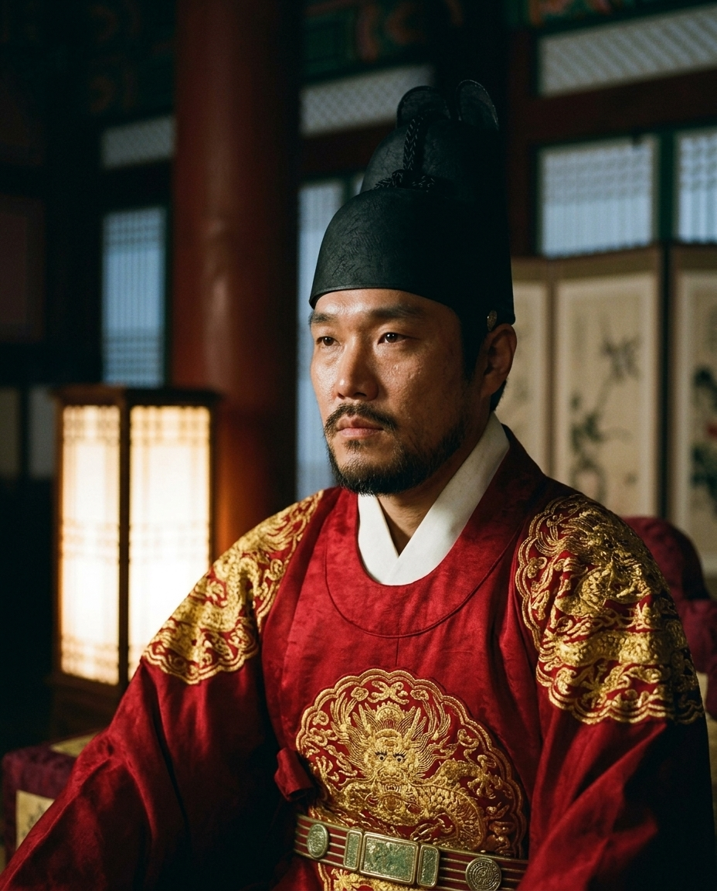
임금 · 제1장
이름은 이야기에 나오지 않는다. 온화하다는 말을 듣던 젊은 임금이었다. 사랑한 여인이 궁 안에서 독으로 죽고, 그 손이 자기 조정 안에 있었다는 것을 알아낸 날부터 달라졌다.
그날 이후 상소에 먹 대신 피를 찍었다. 온화하던 임금이 폭군이 되었다. 그가 시작한 일이 세 세대를 건너간다.
등장: 제1장
곡: 왕의 길목 · 빈 궁궐 메아리 · 피의 옥새
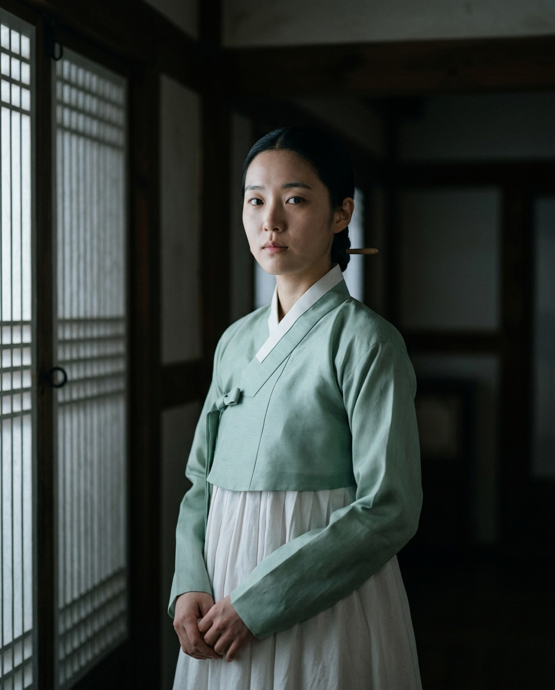
기록에서 지워진 여자 · 제1장
실록에 한 줄도 남지 않았다. 이름은 지워졌고 무덤에는 표가 없다. 궁 안에서 독을 마시고 죽었으나, 그것이 누구의 손이었는지는 오래 밝혀지지 않았다.
이 이야기 전체가 이 여자에게서 시작된다. 스물여덟 곡 가운데 그녀의 목소리로 부르는 곡은 하나뿐이다.
등장: 제1장
곡: 빈 궁궐 메아리 · 안개 속 그림자
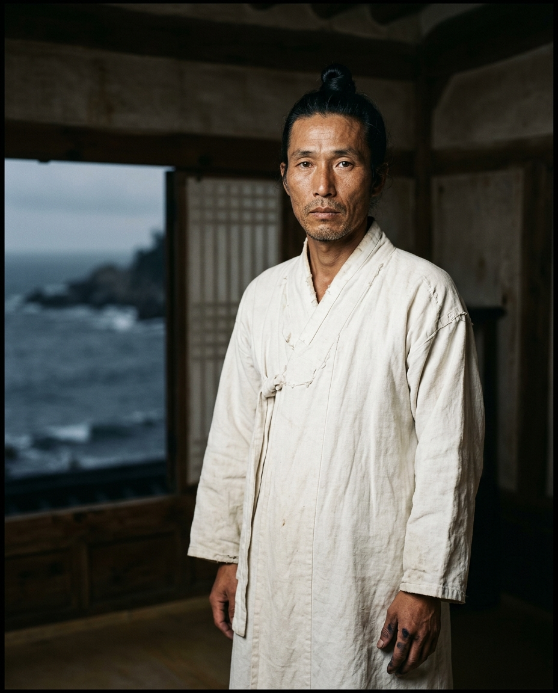
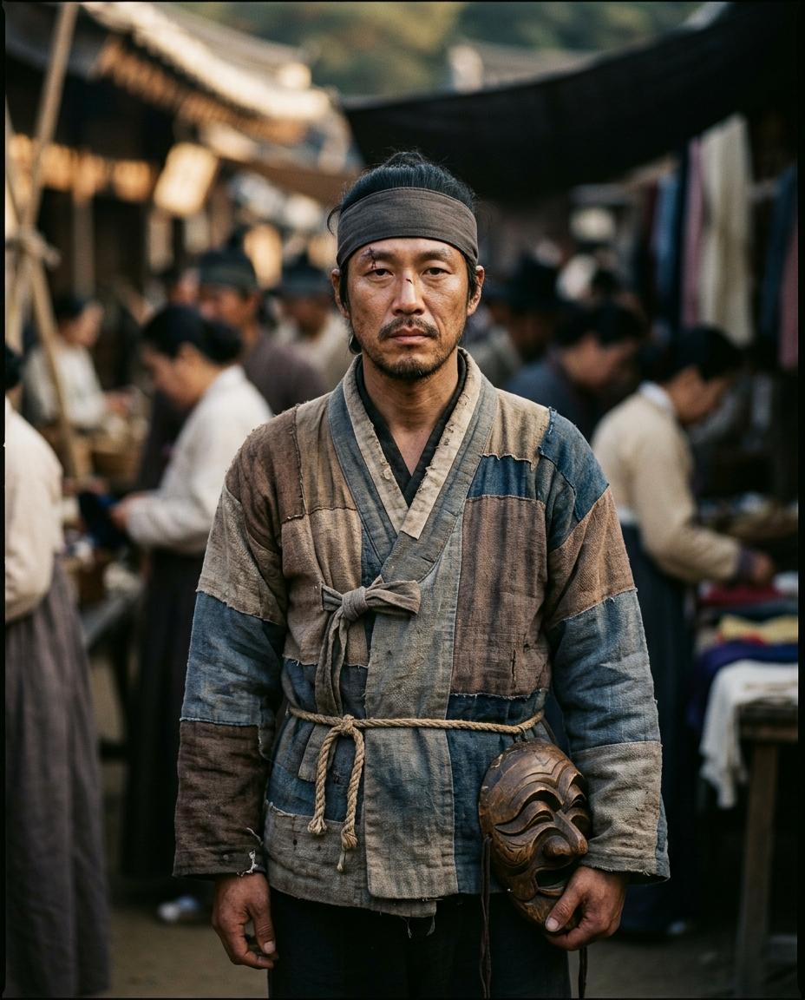
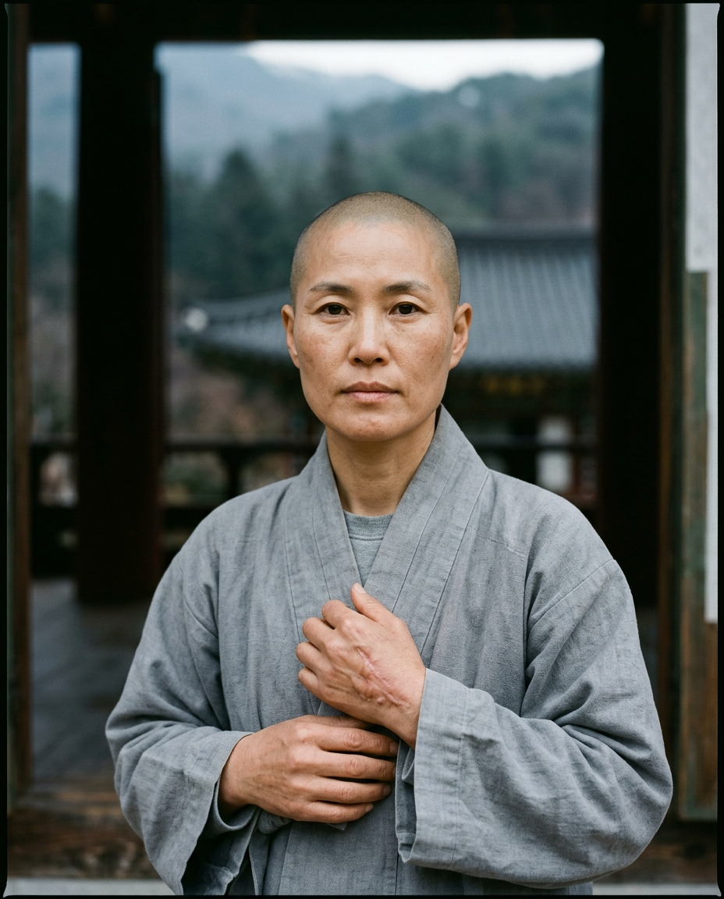
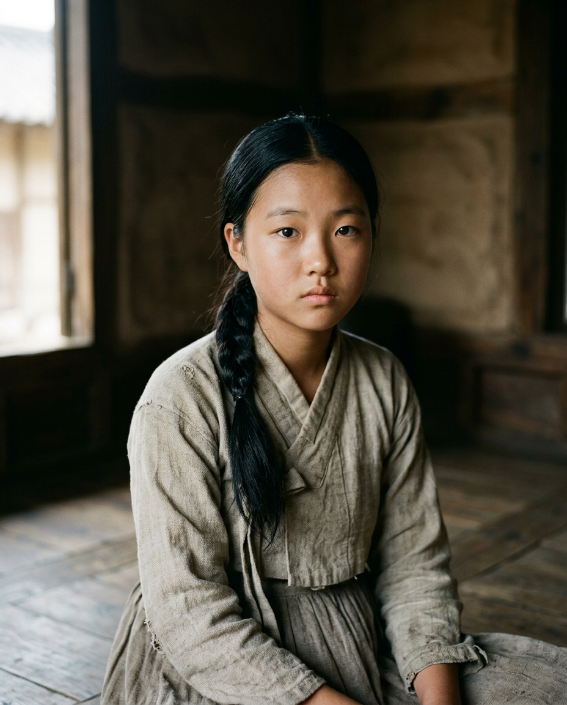
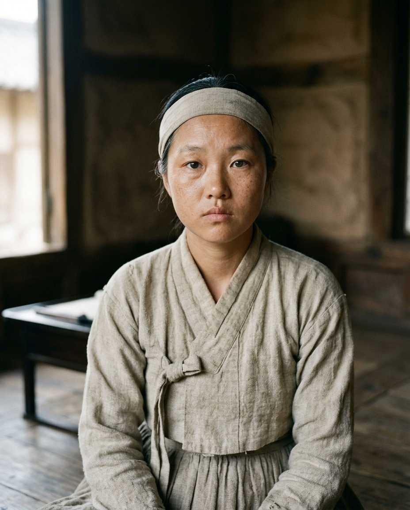
16세 · 44세GENERATION TWO
바다 삼부작
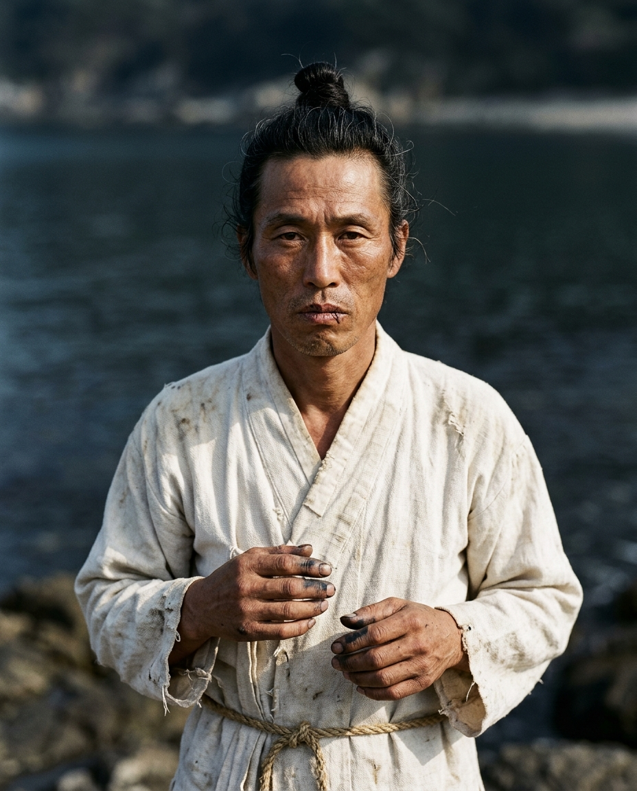
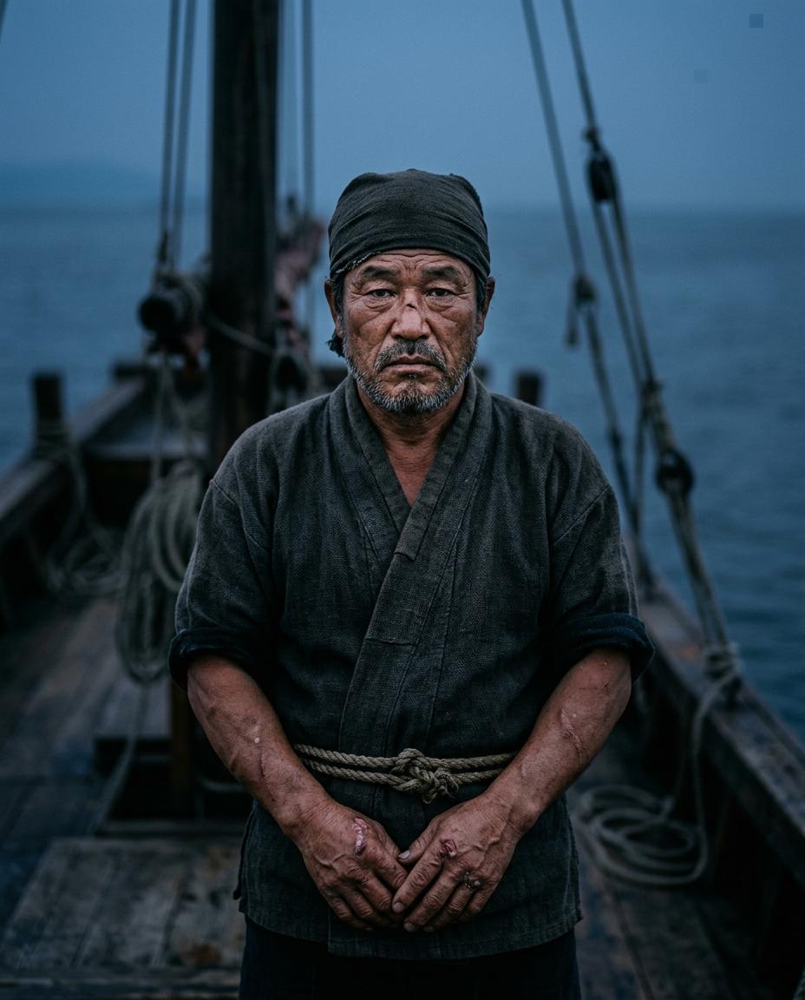
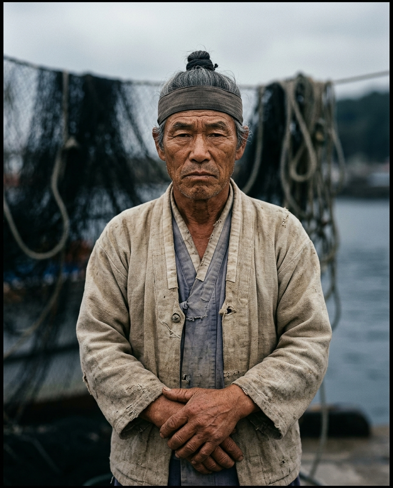
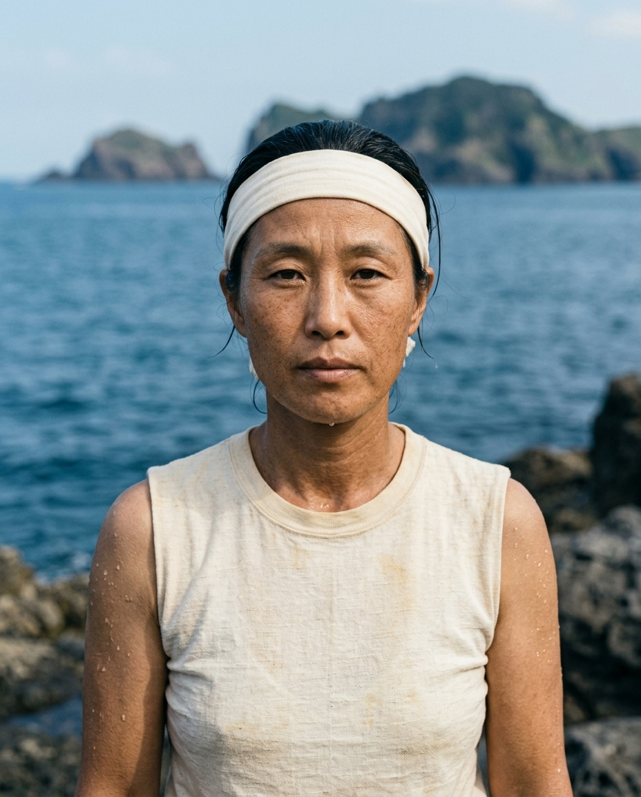